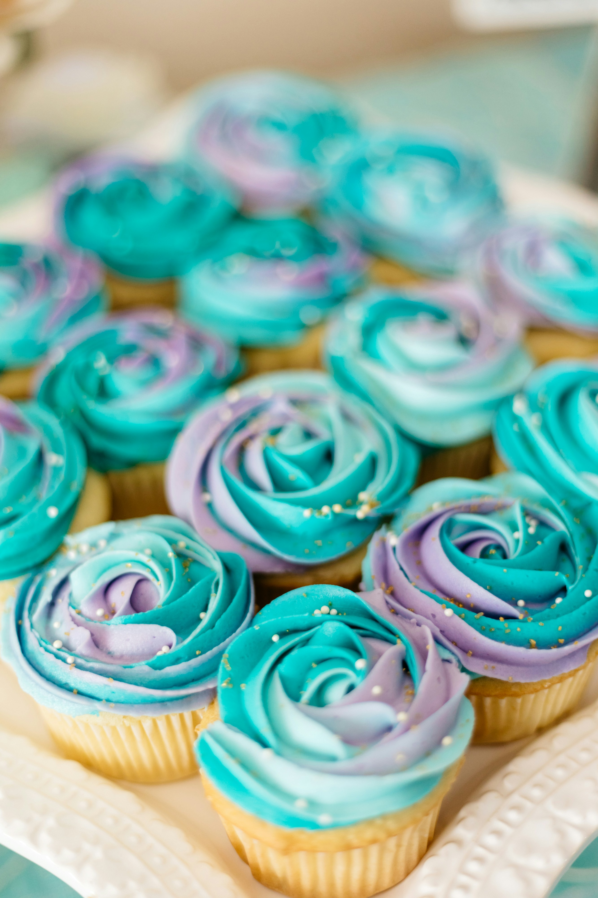

Dairy-Free Cupcakes Recipe

Description
Light and moist dairy-free cupcakes with a pleasant aroma. Delicious, not
too sweet, and easy to make. Top with your frosting of choice or serve
as-is.
Ingredients
- 1 cup all-purpose flour
- 1/3 cup white sugar
- 1/4 cup coconut flour
- 1 teaspoon baking powder
- 1/2 teaspoon ground cinnamon
- 1/4 teaspoon salt
- 1/4 teaspoon ground nutmeg
- 1 egg
- 3/4 cup applesauce
- 1/2 cup coconut milk
- 1/4 cup vegetable oil
- 1 tablespoon honey
- 1/2 teaspoon vanilla extract
Steps
- 1. Preheat oven to 350 degrees F / 175 degrees C.
- 2. Grease 10 cups of a muffin tin or line with paper muffin liners.
-
3.
Combine all-purpose flour, sugar, coconut flour, baking powder,
cinnamon, salt, and nutmeg together in a bowl.
-
4.
Whisk egg lightly in a separate large bowl, then add applesauce, coconut
milk, vegetable oil, honey, and vanilla extract.
-
5.
Stir flour mixture into the large bowl until batter is just combined.
- 6. Scoop batter into the prepared muffin pan.
-
7.
Put pan in the preheated oven and bake until the muffin tops spring back
when lightly pressed and a toothpick inserted into the center comes out
clean, typically about 30 minutes.